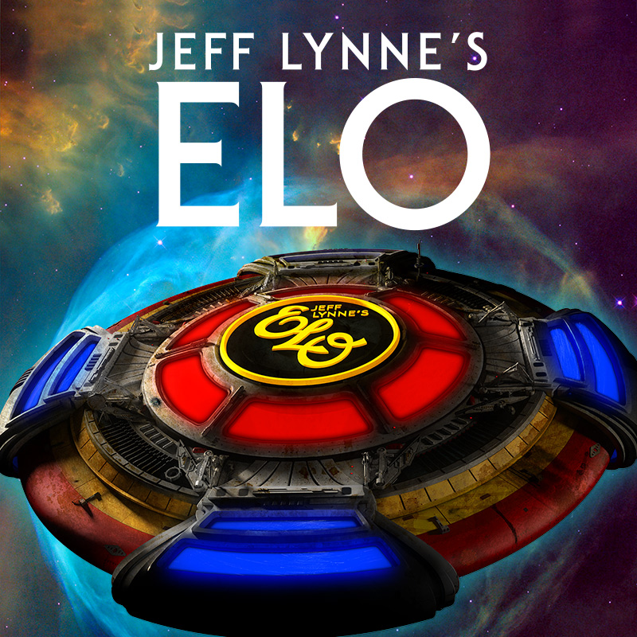

Jeff Lynne's ELO
Home
About Us
Events
Releases
Store
Login

Releases
ELO has released many albums throughout the years. Here are links to playlists of all of them.
The Electric Light Orchestra (1972)
ELO 2 (1973)
On the Third Day (1973)
Eldorado (1974)
Face the Music (1975)
A New World Record (1976)
Out of the Blue (1977)
Discovery (1979)
Xanadu (1980)
Time (1981)
Secret Messages (1983)
Balance of Power (1986)
Zoom (2001)
Alone in the Universe (2015)
As well as
The Essential ELO Collection(A compilation of ELO's greatest hits)
Facebook
YouTube
Twitter